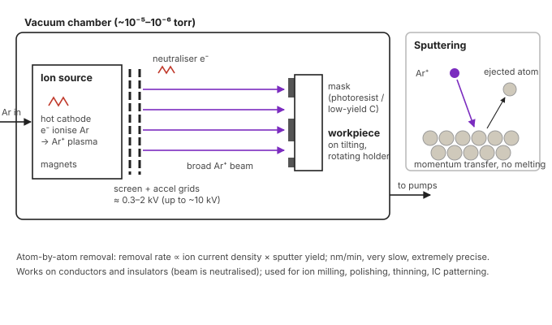

Unit 3 · Lesson 11 of 12 · ~18 min
Ion beam machining: sandblasting with atoms
Fire argon ions at a surface and they knock its atoms out, one collision at a time. Nothing melts. Removal is painfully slow, and precise to the nanometre.
Neither Jain nor Jagadeesha covers IBM in depth. This lesson rests on a primary NASA technical memo (Hudson, 1976) for equipment and data, and on first-principles counting for the removal-rate formula. El-Hofy's Advanced Machining Processes (syllabus reading #8) has a full IBM chapter. If your class notes use a different-looking formula, ask your teacher to reconcile it.
Explain sputtering and the IBM setup, derive the removal rate from ion current density and sputter yield, solve Tutorial Q20, and say where IBM fits against EBM and PAM.
Principle: sputtering
In IBM a beam of inert-gas ions, usually argon (sometimes xenon), is accelerated in a vacuum and directed at the work. Each ion transfers energy and momentum to surface atoms by collision. When a surface atom gains enough energy to break its bonds, it is ejected. This is sputtering. Material comes off atom by atom, by momentum transfer, with no melting. The process is also called ion milling, ion etching or ion polishing.
The sputter yield S is the average number of atoms ejected per incident ion. It depends on ion energy and mass, the angle of incidence, and the target material's binding energy.
"Although listed among thermal-energy processes, IBM removes material by physical sputtering (momentum transfer), not by melting. So it leaves practically no heat-affected zone or recast layer."
Equipment

- Ion source. Argon is fed into a discharge chamber. Electrons from a hot cathode, confined by magnets, ionise the gas into a plasma.
- Extraction and acceleration. A pair of perforated grids pulls ions out and accelerates them into a broad, uniform beam. NASA's 8 cm sources ran at 300–2000 V and 10–200 mA beam current (Hudson, 1976). General texts quote ion energies up to about 10 keV.
- Neutraliser. A filament adds electrons to the beam so insulating work does not charge up. That is why IBM can machine insulators.
- Vacuum chamber. Ions must travel without colliding with gas molecules (NASA's facility pumped to 10⁻⁷ torr).
- Work holder and mask. A mask of photoresist or a low-yield material such as carbon protects areas that must stay. The holder tilts (sets angle of incidence) and rotates (evens out removal).
Derivation: removal rate
This is the same counting logic as Faraday's law in ECM (Unit 2), with "atoms per ion" in place of "1 ÷ valency".
- Ion current density \(J\) (A/m²). Each ion carries charge \(e\), so ion flux \(= J/e\) ions per m² per s.
- Each ion ejects \(S\) atoms: atom flux \(= SJ/e\).
- Divide by Avogadro's number \(N_A\) for moles; note \(eN_A = F = 96{,}485\) C/mol: \[ \text{mol flux} = \frac{S J}{e N_A} = \frac{S J}{F} \]
- Multiply by molar mass \(M\) (kg/mol) for mass flux; divide by density \(\rho\) for thickness per second:
\[ \dot h = \frac{J\,S\,M}{\rho\,F} \quad (\text{m/s, with SI units}) \]
Removal rate rises in proportion to ion current density and sputter yield. Yield in turn rises with ion energy and is larger at oblique incidence than at normal incidence, which is why holders tilt.
Tutorial Q20. Ion current density 1 mA/cm², sputter yield 0.5 atoms/ion for Fe (M = 56 g/mol), density 7.8 g/cm³. Estimate the thickness removal rate in nm/min.
Unit traps: mA/cm² → A/m² multiply by 10; g/mol → kg/mol; g/cm³ → kg/m³.
At the Q20 rate, how long does it take to mill a 1 µm deep feature?
NASA's measured rate for stainless steel at 1000 V and 100 mA was 2100 Å/min (210 nm/min). Drilling holes 0.9 mm deep through a carbon mask took 75 hours (Hudson, 1976). IBM is for nanometres and micrometres, never bulk removal.
Parameters
- Ion energy (accelerating voltage): higher energy, higher yield. Too high adds heating and subsurface damage. NASA chose ~500 eV as a good compromise for sputtering work.
- Beam current density: removal rate directly proportional.
- Angle of incidence: yield is larger at oblique angles; tangential beams preferentially sputter high points, which is how ion polishing works.
- Ion species (mass): Ar is standard; Xe heavier. Reactive ions (e.g., oxygen on diamond) add chemical etching and can remove much faster.
- Target material (binding energy, yield) and mask material (should have a low yield, e.g. carbon).
- Work rotation: NASA's polished samples came out grooved, so they recommended rotating the sample.
Applications
- Ion milling of microelectronics: patterning thin films and ICs through photoresist masks; higher resolution than chemical etching and no chemical contamination (Hudson, 1976).
- Diffraction gratings and laser reflection holograms on silicon.
- Cleaning substrates before thin-film deposition; preparing clean surfaces for research.
- Ion polishing and figuring of optics (aspheric lenses); sharpening diamond tools and microtome knives.
- Thinning specimens for electron microscopy.
- Drilling arrays of irregular-shaped holes through masks; surface texturing (e.g., for implants).
- Focused ion beam (FIB, usually Ga⁺) does maskless micro- and nano-machining in the same way.
Advantages
- Any material: metals, ceramics, semiconductors, insulators
- Atomic-level precision; nano features; excellent finish
- No melting: no HAZ, no recast, no burr
- No mechanical force; no chemicals
- Directional: vertical walls through masks
Limitations
- Extremely low MRR (nm/min)
- Costly vacuum equipment; skilled operation
- Masks also erode; redeposition of sputtered atoms
- Ion implantation and lattice damage near surface
- Only for tiny volumes: finishing and patterning
Practise
3 marksExplain the principle of ion beam machining. Why is it suitable for nano-scale machining?
Principle: argon ions from an ion source are accelerated by grids (hundreds of eV to ~10 keV) in vacuum and neutralised. They strike the work and transfer momentum to surface atoms, which are ejected (sputtering). Removal is atom by atom; sputter yield S = atoms ejected per ion. Removal rate \(\dot h = JSM/(\rho F)\).
Nano suitability: removal per ion is a few atoms, so depth is controlled to nanometres; no melting, so no HAZ or recast; directional beam with masks gives sharp vertical walls; works on insulators and semiconductors. The price is a very low rate (nm/min).
Quick check
1. Material removal in IBM occurs by…
- Melting and vapour expulsion
- Anodic dissolution of atoms
- Momentum transfer ejecting atoms
- Abrasive grains hitting surface
Ions knock atoms out by collision (sputtering). No melting, no electrochemistry, no abrasive.
2. Why does an IBM system include a neutraliser?
- So insulating work does not charge
- To slow ions before they arrive
- To ionise more argon gas atoms
- To cool the target during milling
Without added electrons, an insulating target would build up positive charge and repel the beam. Neutralising the beam lets IBM machine insulators.
3. Doubling ion current density at fixed energy makes removal rate…
- Decrease to half
- Remain exactly unchanged
- Increase roughly two-fold
- Increase about four-fold
\(\dot h = JSM/(\rho F)\): directly proportional to J when S is unchanged.
4. A mask for IBM should ideally have…
- High sputter yield
- High electrical conductivity
- Low melting point
- Low sputter yield
The mask must survive while the exposed work is milled. NASA used carbon masks on stainless steel because carbon sputters much more slowly.